Universal Basic Capital
with a Social Wealth Fund
Very Preliminary
QMUL, TSE and CEPR
Brown University
August 13, 2026
Motivation
Motivation
- Technology expected to widen inequality in both labor income and asset returns
- Renewed interest in UBI as a response
- Existing literature is negative on effectiveness: too costly and distortionary
- even more so with forward-looking education and entrepreneurship decisions
- Can Universal Basic Capital (UBC)
financed by a Social Wealth Fund (SWF)
be a more efficient mechanism for redistribution?
Real Motivation
© Getty Images
Mechanism and Preliminary Results
UBC: pledge future UBI at “early in life” decision nodes
SWF: returns from publicly owned business capital in lieu of distortionary taxation
- Real-world analogues
- But public capital crowds out private capital
Quantitative question: can these mechanisms overturn UBI’s negative effects?
- Effects on output and physical and human capital
- Incidence across workers and entrepreneurs
- Interaction between the two mechanisms
UBC: Pledgeability of Future Transfers
Let \(\Omega_s:=\) present value of future transfers at time \(s\), and define \[ a_{s+1}\ge-\frac{\color{red}{\phi_h}\Omega_{s+1}}{1+r}, \qquad k\le\lambda(a+\color{red}{\phi_k}\Omega_s). \]
- \(\phi_h>0\): relax borrowing constraint, can use for education
- \(\phi_k>0\): relax collateral constraint, can use for production
- Pledgeability relaxes the constraint before education and production choices
SWF: Less Distortionary but Crowds Out Capital
- SWF owns share \(\kappa\) of entrepreneurial capital: \[ (1-\color{red}{\kappa})k\le\lambda(a+\phi_k\Omega_s). \]
- Receipts can finance universal dividends or capital transfers
- Pools entrepreneurial risk, replaces distortionary taxation
Tradeoff: lowers private capital financing, leading to ambiguous GE effects
Four Policies, Two Margins
| Policy | Pledgeability? | SWF? |
|---|---|---|
| UBI |
No | No |
| UBC |
Yes | No |
| SWD |
No | Yes |
| SWC |
Yes | Yes |
Simple Model
Minimal Environment
- OLG: one dynasty = adult + child
- Adult state: assets \(a\), human capital \(h\), entrepreneurial ability \(z\)
- Occupation: worker \(W\) or entrepreneur \(E\)
\[ V(a,h,z)=\max\{V^W(a,h,z),\mathbb EV^E(a,h,\epsilon z)\}, \] - Child investment \(e\): \[ h'\sim H(\cdot\mid h,e),\qquad z'\sim F(\cdot\mid h'). \]
- Key friction: financing at early-life decision nodes
UBI vs UBC: \(\phi\uparrow\)
Proposition (UBI\(\prec\)UBC) \[ \begin{aligned} V^{UBC}(a,h,z) &\ge V^{UBI}(a,h,z) \\ e^{UBC}(a,h,\tilde z) &\ge e^{UBI}(a,h,\tilde z) \end{aligned} \] with strict gains when early constraints bind on a non-degenerate set.
Corollary (UBI\(\prec\)UBC and bequests) The welfare gap \[ \mathbb{E}\left[ V^{UBC}(a',h',z')-V^{UBI}(a',h',z')\right] \] is larger whenever the bequest constraint binds.
How UBC Gains (Might) Arise
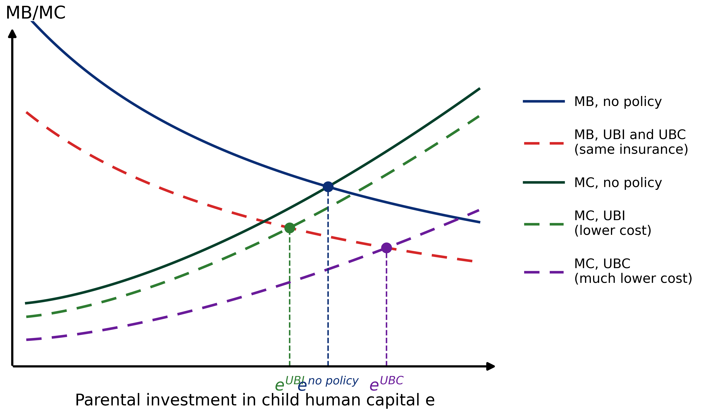
UBI vs SWD: \(\kappa=0\;\rightarrow\kappa>0\)
Lemma:
If \(r>0\), SWF net proceeds imply: \(\omega^S>\omega^U\) since \(k(a,\epsilon z)=0\) if \(R(\epsilon z;w)\leq\bar R\).
Proposition (UBI\(\prec\)SWD) \[ V^{SWD}(a,h,z)>V^{UBI}(a,h,z) \] since larger \(\omega^S\) frees resources.
As in UBI\(\prec\)UBC, welfare gaps are larger if the bequest constraint binds.
Inequality Amplifies the Mechanism
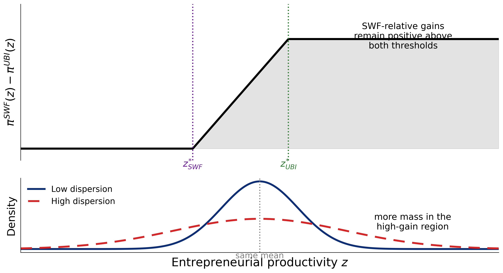
- More dispersion \(\rightarrow\) more households in high-return states, early constraints bind
- High entrepreneurial returns \(\rightarrow\) higher value of collateral
- Human-capital complementarity \(\rightarrow\) higher return to education investments
Quantitative Model
Lifecycle Structure
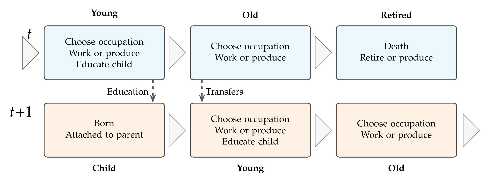
- All households save at end of period
- All retirees earn pensions; can run business but can’t work
- Timing preserves intuition from simple model GE channels
Calibration
- Fixed and calibrated parameters
- Empirical targets:
period earnings, entrepreneurship, wealth distribution, education investments - Benchmark “UBI”: \(4\%\) of annual worker earnings
- \(13\%\) pledgeable for education and entrepreneurial finance
- Annual safe rate: \(3\%\)
- Government spending: \(18.9\%\) of GDP
Exact calibration in progress
Counterfactual Design
- Holding structural and all other fiscal parameters constant, vary
- SWF ownership of business capital (benchmark counterfactual: \(\kappa=0.1\))
- transfer pledgeability (\(\phi_h,\phi_k\): benchmark \(\rightarrow 1\))
- Compare:
- SWF (\(\kappa\)) proceeds finance UBC (\(\omega\))
- SWF (\(\kappa\)) balanced by income tax
- UBC (\(\omega\)) financed by income tax
- Solve for \((r,w)\) in stationary GE
- Compare output, income, physical and human capital
Limitations: no CEV welfare or transitions yet
Preliminary Results
Output
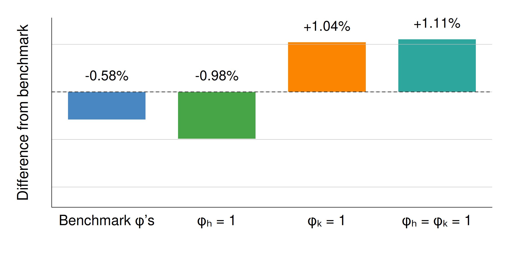
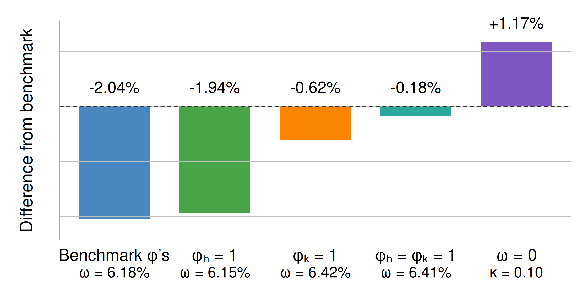
- SWF beats matched tax finance in all cases
- Under SWF-funded UBC, \(\phi_k\) raises output about \(1\%\) above benchmark
- SWF-funded tax cuts raise output by \(1.17\%\)
Private Capital
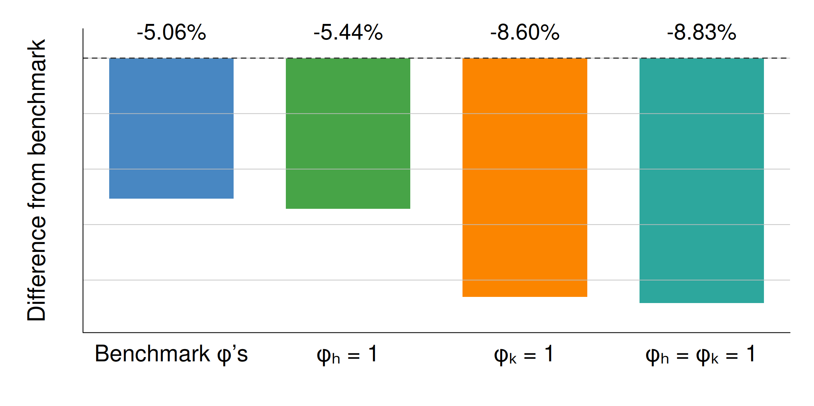
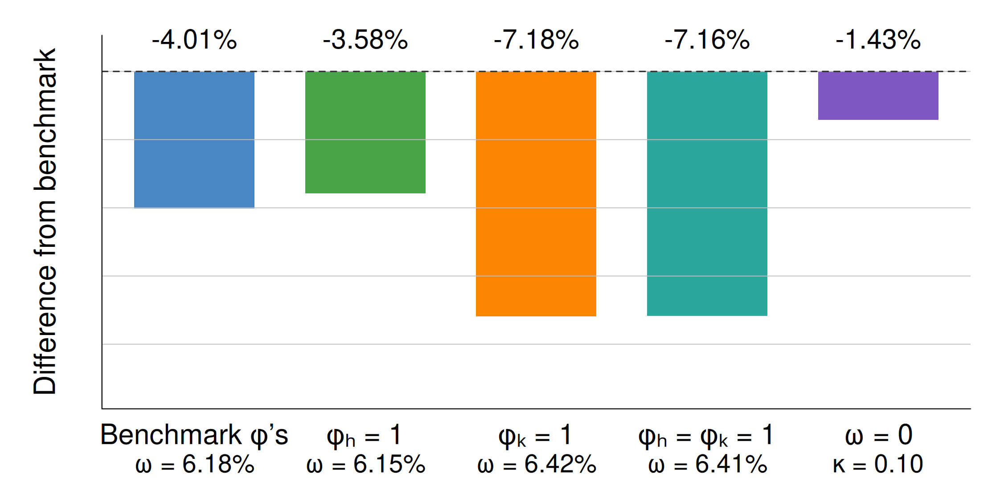
- SWF adds \(1\)–\(2\) pp to the decline versus matched tax finance
- \(\phi_k\) deepens crowd-out; SWF-funded tax cuts limit the decline to \(1.43\%\)
Human Capital
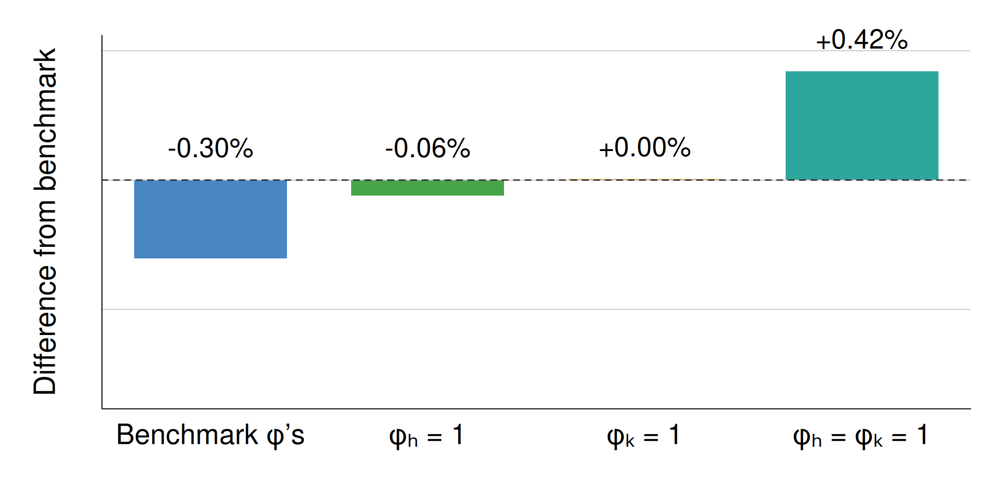
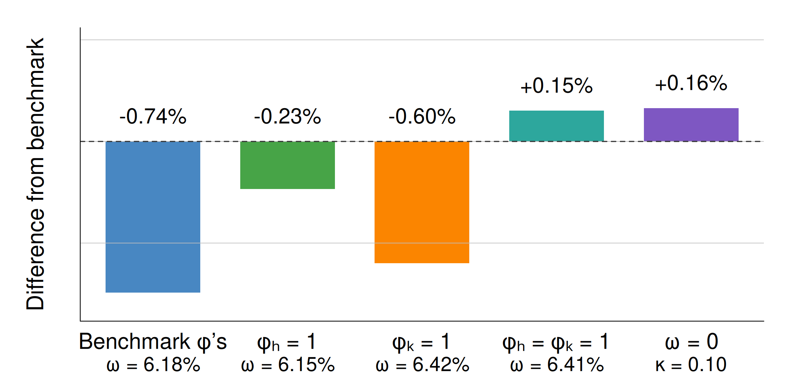
- \(\phi_h\) enables education investment; \(\phi_k\) raises demand for human capital
- Human capital rises only when both margins operate
Entrepreneur Shares
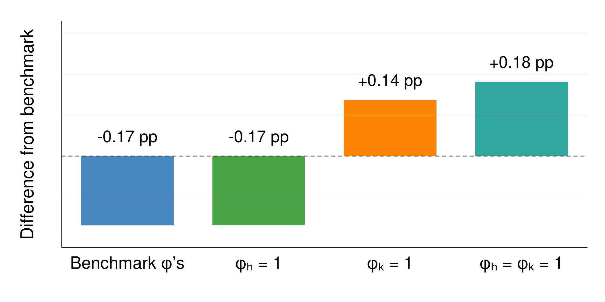
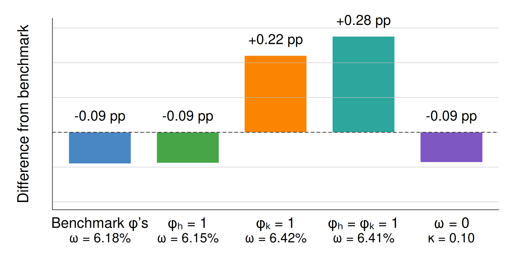
- \(\phi_k\) reverses the decline in entrepreneurship
- Both margins: entry \(+0.18\) pp with SWF finance; \(+0.28\) pp with tax finance
Worker Hours
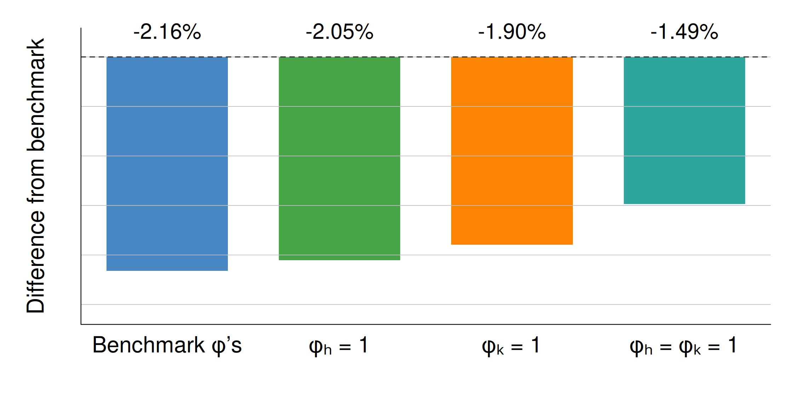
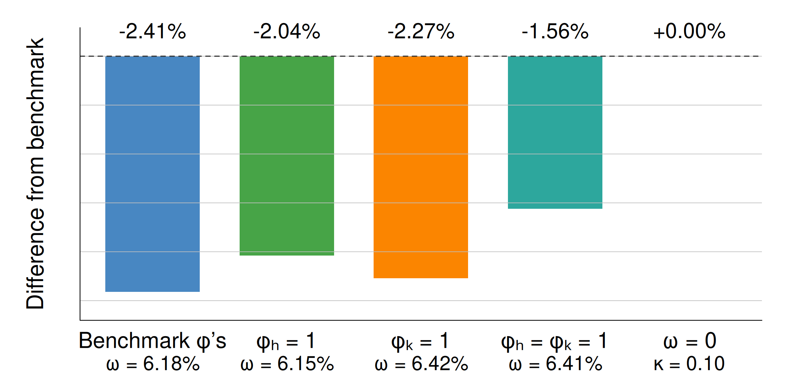
- UBC lowers worker hours by \(1.5\)–\(2.4\%\)
- Pledgeability softens the decline; SWF-funded tax cuts leave hours unchanged
Who Gains?
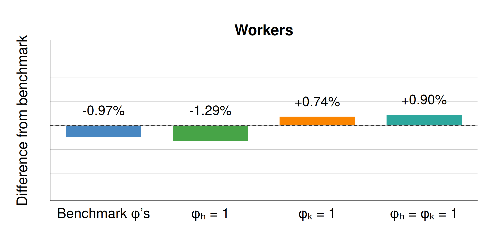
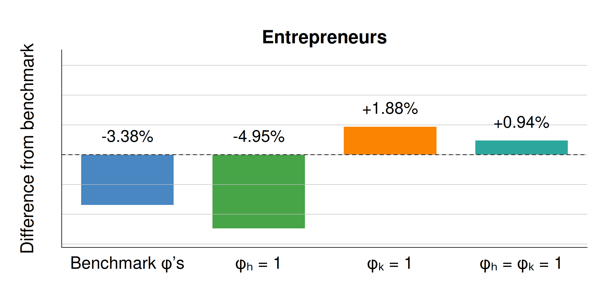
- \(\phi_k\) turns conditional-income losses into gains for both groups
- Both margins: worker income \(+0.90\%\); entrepreneur profit \(+0.94\%\)
Who Gains under Alternative Financing?
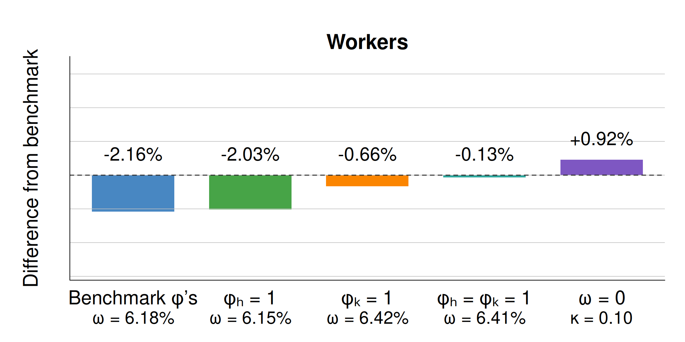
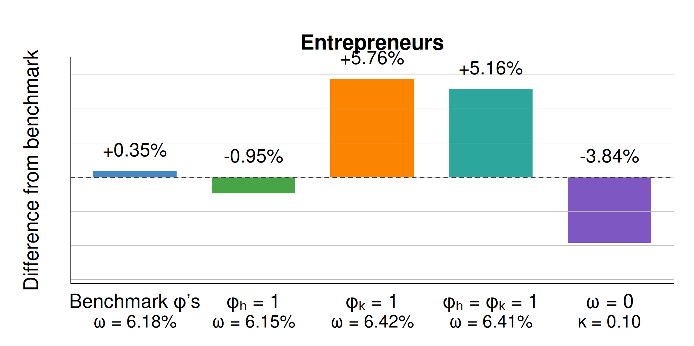
- Tax-funded UBC lowers conditional worker income in all cases
- With \(\phi_k\), conditional entrepreneur profit rises by \(5\)–\(6\%\)
- SWF tax cuts: worker income \(+0.92\%\); entrepreneur profit \(-3.84\%\)
Interactive Effects
- \(\phi_k\) raises output and entrepreneurship despite lower private capital
- \(\phi_h\) mainly raises human capital, especially with \(\phi_k\)
- SWF raises output but dampens entrepreneurship versus tax finance
- SWF tax cuts raise worker income but lower entrepreneur profit
- Tax-funded UBC with \(\phi_k\) does the opposite
- Optimal mix requires welfare analysis
Conclusion
Conclusion
- UBC relaxes early constraints
- SWF substitutes public for private finance
- Preliminary: with SWF funding, \(\phi_k\) reverses the output loss
- Financing: SWF beats tax finance on output
- Incidence: SWF tax cuts: workers gain, entrepreneurs lose
- Interaction: \(\phi_k\) raises activity; \(\phi_h\) raises human capital
Next: CEV welfare, incidence by wealth and earnings, transitions, optimal policy
References
Appendix
Literature
- UBI: insurance gains versus distortionary finance (Ghatak and Maniquet 2019; Conesa, Li, and Li 2023; Luduvice 2024)
- Alaska Permanent Fund evidence finds little labor-supply response; general-equilibrium effects may matter (Jones and Marinescu 2018)
- Future transfers can crowd out child investment and entrepreneurship (Daruich and Fernández 2024; Awal and Hashmi 2025)
- SWF research emphasizes fiscal stability rather than redistribution (Megginson and You 2014; James and MacDermott 2022)
- Corneo (2022) studies a redistributive SWF without the microeconomic financing channels here
Real-World “SWF”?
- Sovereign wealth funds generally invest globally for fiscal stabilization
- State-linked equity funds, such as Temasek, own domestic businesses
- Public investment banks invest in domestic firms
- Our SWF combines domestic business investment with citizen dividends
Household Problem
\[ V^o(a,h,\tilde z_o)=\max_{c,e,a'\ge0} \left\{u(c)+\beta\mathbb E[V(a',h',z')\mid h,e]\right\}, \] subject to \[ e\le y_o+(1+r)a-\tau(a,h,\tilde z)+\phi\omega, \] \[ c+e+a'\le y_o+(1+r)a-\tau(a,h,\tilde z)+\omega. \]
Entrepreneurial Production
\[ \max_\ell (\epsilon zk)^\alpha\ell^{1-\alpha}-w\ell, \qquad R(\epsilon z;w)=\epsilon z\alpha\left(\frac{1-\alpha}{w}\right)^{\frac{1-\alpha}{\alpha}}. \] \[ (1-\kappa)k(a,\epsilon z)\le\lambda(a+\phi\omega), \] \[ y(a,\epsilon z)=\max\{0,\lambda(a+\phi\omega)[R(\epsilon z;w)-r-\delta]\}. \]
Government Budget Constraint
\[ \begin{aligned} D&=\kappa\int R(\epsilon z;w)k(a,\epsilon z)\,dg(\epsilon)d\mu,\\ K_g&=\kappa\int k(a,\epsilon z)\,dg(\epsilon)d\mu, \end{aligned} \] \[ \omega+I_g+G_0=T_0+D,\qquad K_g'=(1-\delta)K_g+I_g. \] In steady state: \[ \omega+\delta K_g+G_0=T_0+D. \]
GE Channels
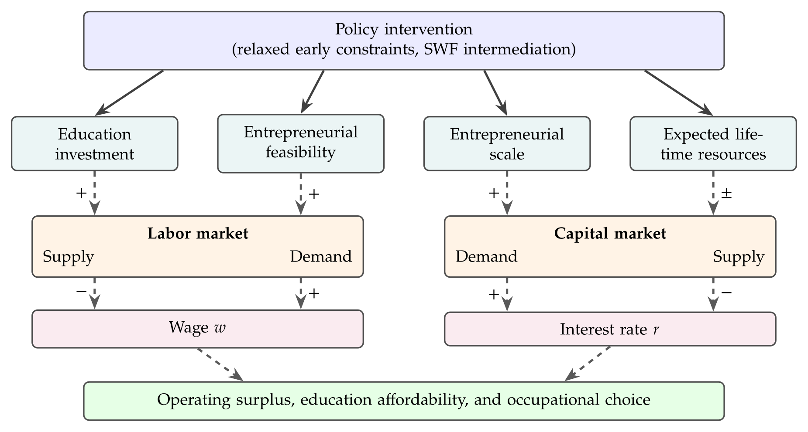
Solid arrows are partial-equilibrium channels.
Dashed arrows are equilibrium adjustments.
Fixed Parameters
| Parameter | Description | Value | Source / target |
|---|---|---|---|
| \(\chi\) | CRRA coefficient | \(1.5\) | |
| \(\varphi_1\) | Inverse Frisch elasticity | \(2.0\) | Fixed |
| \(q_1\) | Adult equivalence scale | \(2.057\) | Implied by calibrated altruism |
| \(\varsigma\) | Survival probability | \(0.577\) | Life expectancy, National Center for Health Statistics (2011) |
|
|
|||
| \(\alpha\) | Entrepreneurial capital elasticity | \(0.33\) | |
| \(\delta\) | Model-period depreciation rate | \(0.744\) | |
| \(\lambda\) | Collateral constraint | \(2.00\) | Mean entrepreneur leverage, SCF |
| \(\psi_s\) | Earnings shifter | \((1,1.1403)\) | Hourly wage profile, CPS |
|
|
|||
| \(\tau_1\) | Tax progressivity | \(0.20\) | Heathcote, Storesletten, and Violante (2017) |
| \(G/Y\) | Government purchases / GDP | \(18.9\%\) | Heathcote, Storesletten, and Violante (2017) |
| \(r^{ann}\) | Annual safe rate | \(3\%\) | Fixed empirical input |
| \(\omega_0/\bar y^{ann}\) | Benchmark universal transfer / worker earnings | \(4\%\) | Policy benchmark |
| \(\phi_{h0},\phi_{k0}\) | Benchmark transfer pledgeability | \((0.1327,0.1327)\) | Policy benchmark |
| \(p\) | Social Security replacement rate | \(40\%\) | Social Security Administration (2011) |
| \(\tau_a\) | Capital income tax rate | \(0.36\) | Fixed |
| \(\tau_c\) | Consumption tax rate | \(0.05\) | Fixed |
Calibrated Parameters
| Parameter | Description | Provisional | Target / role |
|---|---|---|---|
| \(\beta^{ann}\) | Discount factor | \(0.9895\) | Capital clearing at \(r^{ann}=3\%\) |
| \(\tau_0^{ann}\) | Tax level | \(0.9548\) | \(G/Y=18.9\%\) |
|
|
|||
| \(\theta\) | Altruism toward children | \(0.4851\) | Transfers / wealth |
| \(\varphi_{0,s}\) | Labor disutility | \((7.0566,\;14.2298)\) | Mean hours by age |
| \(\zeta_s\) | Entrepreneurship preference | \((-1.1900,\;-0.5124,\;-1.0282)\) | Entrepreneur shares by age |
| \(\sigma_\xi\) | Taste-shock dispersion | \(0.20\) | Fixed provisionally; wealth-entry profile auxiliary |
|
|
|||
| \(\gamma\) | Child investment productivity | \(0.4625\) | Education expenditures / GDP |
|
|
|||
| \(\nu\) | Entrepreneurial returns to scale | \(0.9381\) | Entrepreneur wealth share |
| \(\mu_z\) | Entrepreneurial ability level | \(4.1987\) | Entrepreneurial income share |
| \(\rho_h\) | Intergenerational human-capital persistence | \(0.3875\) | Parent-child income rank slope |
| \(\rho_z\) | Human capital–entrepreneurial ability link | \(0.4500\) | Children’s relative entrepreneurship |
| \(\sigma_\eta^h,\sigma_\eta^z\) | Permanent skill dispersion | \((0.1583,\;0.1583)\) | Permanent earnings dispersion |
|
|
|||
| \(\sigma_s^h\) | Labor-income shock dispersion | \((0.2511,\;1.0015)\) | Lifecycle earnings risk |
| \(\sigma_s^z\) | Entrepreneurial shock dispersion | \((0.6315,\;0.0999,\;0.6315)\) | Business-income dispersion |
| \(\bar y^{ann}\) | Earnings scale | \(2.4398\) | Mean worker earnings |
Targeted Moments
| Moment | Data | Model |
|---|---|---|
| Mean hours by age (CPS; model units) | \((0.281,\;0.227)\) | \((0.300,\;0.151)\) |
| Common worker-income component SD (DeBacker et al.) | \(1.05\) | \(5.355\) |
| Stage-specific worker-income innovation SD (DeBacker et al.) | \((0.877,\;1.04)\) | \((0.369,\;1.097)\) |
|
|
||
| Entrepreneur shares by age (SCF) | \((8.4\%,\;14.8\%,\;8.3\%)\) | \((0.18\%,\;14.67\%,\;0.85\%)\) |
| Entrepreneur wealth share (SCF) | \(45.2\%\) | \(8.31\%\) |
| Entrepreneur income share (SCF) | \(13.9\%\) | \(19.64\%\) |
| Common entrepreneur-income component SD (DeBacker et al.) | \(2.96\) | \(3.058\) |
| Stage-specific entrepreneur-income innovation SD, projection (DeBacker et al.) | \((3.08,\;4.09,\;4.88)\) | \((0.000,\;0.000,\;1.714)\) |
|
|
||
| Education expenditures / GDP (OECD) | \(5.8\%\) | \(7.04\%\) |
| Transfers / wealth (FEDS) | \(40\%\) | \(5.02\%\) |
| Parent-child income rank correlation Chetty et al. (2014) | \(0.341\) | \(0.603\) |
| Children’s relative entrepreneurship probability | \(1.60\) | \(0.934\) |